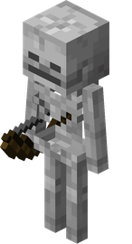
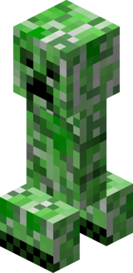
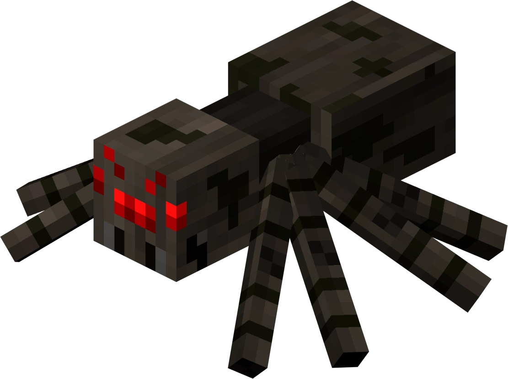

Інформація про персону
Маленький зомбі — це моб з гри Minecraft, який є дитячою версією звичайного зомбі, що має підвищену швидкість, менший розмір, може проходити крізь вузькі отвори (1x1 блок) та сідати на тварин (курок, вовка, тощо), а його обладунки зменшуються разом із тілом, що робить його небезпечнішим і складнішим для полювання, ніж дорослі зомбі.

Його друзі
А його друзі - це всі моби які хотять знищити Стіва:
-
Скелет у Minecraft — це ворожий моб, який з’являється вночі або в темних місцях. Він атакує гравця з відстані, стріляючи з лука стрілами. Після знищення скелет може залишити кістки, стріли або лук. Скелети бояться сонячного світла й згорають удень, якщо не мають захисту.
 -
Кріпер у Minecraft — це небезпечний ворожий моб, який тихо підкрадається до гравця й вибухає поруч із ним. Він не видає звуків кроків, тому його складно помітити. Після вибуху кріпер зникає, залишаючи вирви та завдаючи великої шкоди. З кріпера можна отримати порох, а якщо його вб’є скелет — музичну платівку.
 -
Павук у Minecraft — це ворожий моб, який швидко пересувається та вміє лазити по стінах. Уночі він нападає на гравця, а вдень стає нейтральним, якщо його не чіпати. Павуки можуть стрибати на ціль і атакувати з близької відстані. Після перемоги над павуком можна отримати нитки та іноді павучі очі.
